Defensas traseras inferiores en Panamá
51 disponibles hoy, originales y genéricas, cada una con su foto y su código. Elige la marca de tu carro:
- Garantía de 3 días
- Foto real de cada pieza
- Efectivo, Yappy o ACH
- Lunes a sábado, 8:00 a. m. a 5:00 p. m.
Defensas traseras inferiores para BMW 8
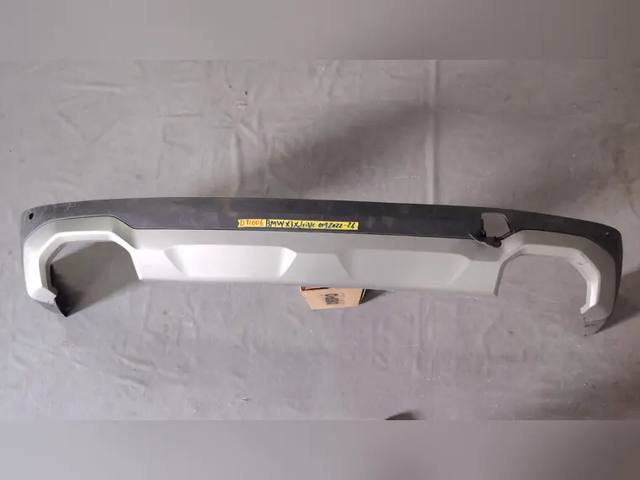
DTI006BMW X3 xDrive2022-26 · original DTI011BMW iX (I20) M Sport2021-23 · original
DTI011BMW iX (I20) M Sport2021-23 · original DTI012BMW X12022-26 · original
DTI012BMW X12022-26 · original DTI042BMW X1 (U11)2022 · original
DTI042BMW X1 (U11)2022 · original DTI048BMW X32018-23 · original
DTI048BMW X32018-23 · original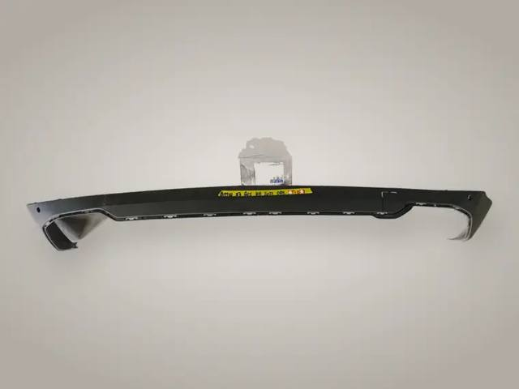
DTI049BMW X3 (G01)2022-23 · original DTI050BMW X3 (G01)2022-23 · original
DTI050BMW X3 (G01)2022-23 · original DTI051BMW X3 (G01) xLine2018-21 · original
DTI051BMW X3 (G01) xLine2018-21 · originalDefensas traseras inferiores para Hyundai 5
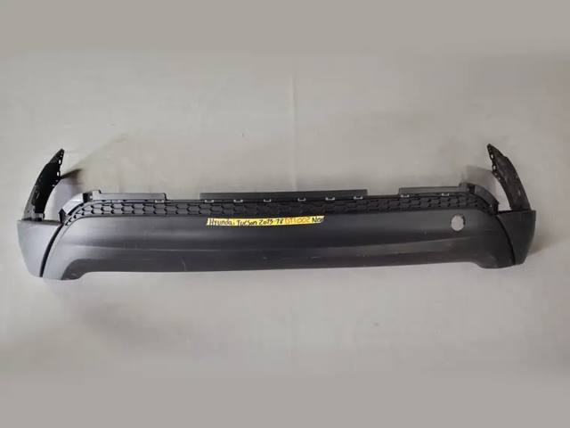
DTI002Hyundai Tucson2015-18 · nuevo DTI010Hyundai Creta2017-20
DTI010Hyundai Creta2017-20 DTI017Hyundai i202018-20 · original nuevo
DTI017Hyundai i202018-20 · original nuevo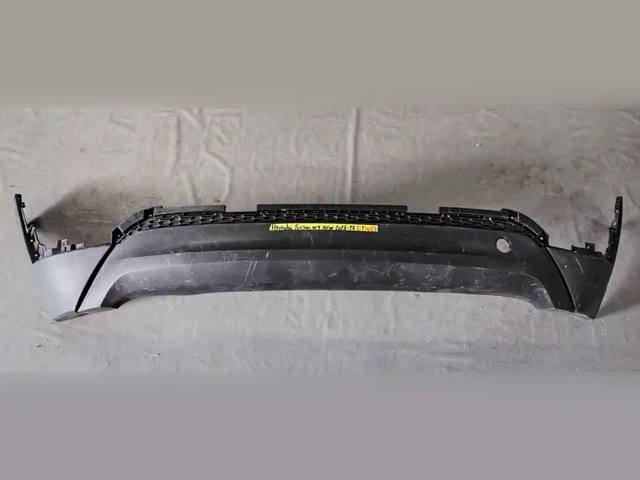
DTI023Hyundai Tucson2016-18 · original nuevo DTI041Hyundai Grand i102024 · original
DTI041Hyundai Grand i102024 · originalDefensas traseras inferiores para Forthing 5
 DTI007Forthing T5 EVO2021-25 · original
DTI007Forthing T5 EVO2021-25 · original DTI028Forthing T5 EVO2022 · original
DTI028Forthing T5 EVO2022 · original DTI029Forthing T5 EVO2022 · original
DTI029Forthing T5 EVO2022 · original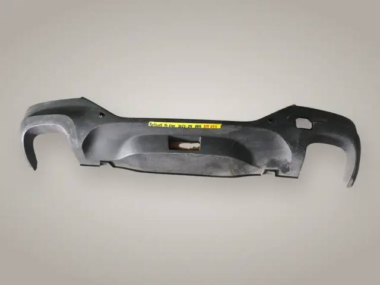
DTI033Forthing T5 EVO2022-24 · original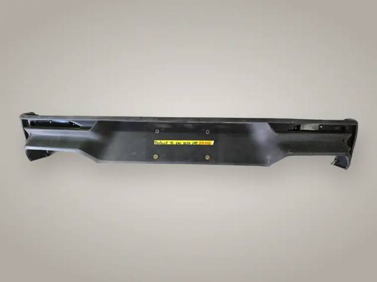
DTI052Forthing T5 EVO2024 · originalDefensas traseras inferiores para KIA 4
 DTI005KIA Sportage2016-18 · original
DTI005KIA Sportage2016-18 · original DTI032KIA Sportage2020-24 · original nuevo
DTI032KIA Sportage2020-24 · original nuevo DTI034KIA Sonet2022 · original
DTI034KIA Sonet2022 · original DTI038KIA Sonet2023 · original
DTI038KIA Sonet2023 · originalDefensas traseras inferiores para Mercedes-Benz 4
 DTI043Mercedes-Benz GLC 3002016-19 · original
DTI043Mercedes-Benz GLC 3002016-19 · original DTI044Mercedes-Benz GLA (X156)2019 · original
DTI044Mercedes-Benz GLA (X156)2019 · original DTI046Mercedes-Benz GLE 3502020-25 · original
DTI046Mercedes-Benz GLE 3502020-25 · original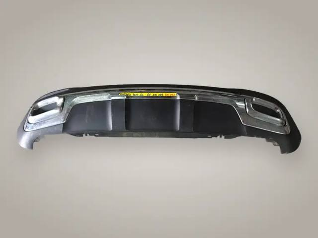
DTI047Mercedes-Benz GLE / GLA2025 · originalDefensas traseras inferiores para GAC 3
 DTI001GAC Emzoom2023-26 · original
DTI001GAC Emzoom2023-26 · original DTI004GAC GS32020-24 · original
DTI004GAC GS32020-24 · original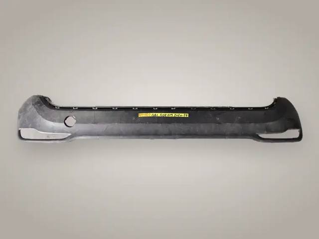
DTI020GAC GS42020-24 · originalDefensas traseras inferiores para Toyota 3
 DTI013Toyota RAV42016-18 · original
DTI013Toyota RAV42016-18 · original DTI039Toyota RAV42020 · original
DTI039Toyota RAV42020 · original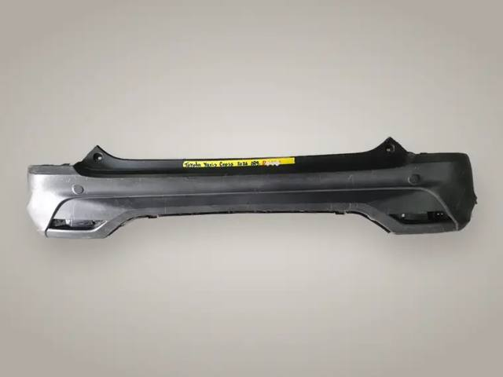
DTI040Toyota Yaris Cross2026 · originalDefensas traseras inferiores para Jeep 3
 DTI014Jeep Compass2016-21 · original
DTI014Jeep Compass2016-21 · original DTI015Jeep Compass2016-21 · original
DTI015Jeep Compass2016-21 · original DTI018Jeep Wrangler2007-18 · original
DTI018Jeep Wrangler2007-18 · originalDefensas traseras inferiores para Nissan 3
 DTI022Nissan NV350 Caravan / Urvan2012-16 · original
DTI022Nissan NV350 Caravan / Urvan2012-16 · original DTI024Nissan Sentra B13 / Tsuru1992-2016
DTI024Nissan Sentra B13 / Tsuru1992-2016 DTI025Nissan NV350 Caravan / Urvan2012-16 · original
DTI025Nissan NV350 Caravan / Urvan2012-16 · originalDefensas traseras inferiores para Ford 2
 DTI009Ford Escape
DTI009Ford Escape DTI035Ford EcoSport
DTI035Ford EcoSportDefensas traseras inferiores para Mini 2
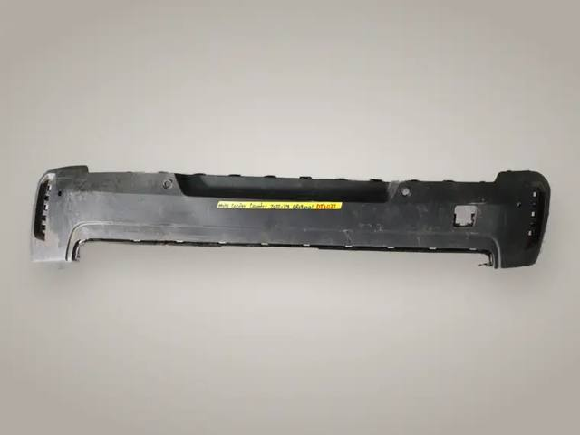
DTI031Mini Cooper Countryman2022-24 · original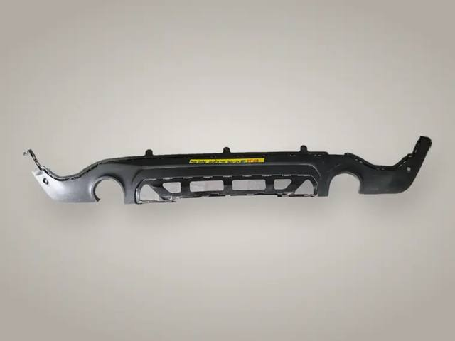
DTI036Mini Cooper Countryman2021-24 · originalDefensas traseras inferiores para BYD 1
 DTI003BYD Song Plus
DTI003BYD Song PlusDefensas traseras inferiores para Chery 1
 DTI016Chery Tiggo 2 Pro
DTI016Chery Tiggo 2 ProDefensas traseras inferiores para Volkswagen 1
Defensas traseras inferiores para Honda 1
Defensas traseras inferiores para Mazda 1
Defensas traseras inferiores para Audi 1
 DTI027Audi Q5
DTI027Audi Q5Defensas traseras inferiores para Chevrolet 1
Defensas traseras inferiores para Porsche 1
Defensas traseras inferiores para Mitsubishi 1
Otros tipos de pieza
Parrillas 327Faros y lámparas delanteras 250Defensas traseras 248Lámparas traseras 211Defensas delanteras 209Flares 182Covers de halógena 167Guardafangos 141Halógenas y faros antiniebla 112Puertas 99Cubrepolvos 91Capós 69Refuerzos delanteros 69Tapas de baúl 66Marcos de radiador 58Retrovisores 57Estribos y rolling boards 55Defensas delanteras inferiores 52Tapas superiores de radiador 48Vidrios 47Refuerzos traseros 26Copas 21Molduras traseras 20Guardafangos traseros 18Extensiones de defensa trasera 17Protectores inferiores 14Ventiladores 13Depósitos de agua 13Extensiones de defensa delantera 6Accesorios nuevos 5Soportes de defensa 2Covers de vagón (bedliner) 1